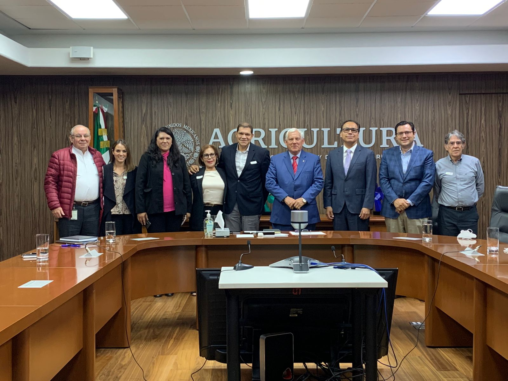
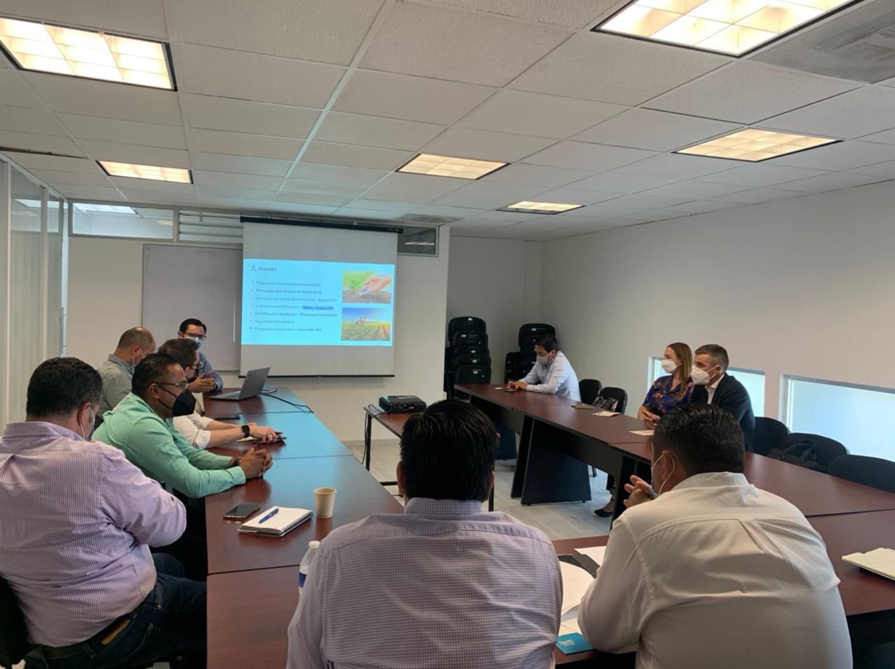
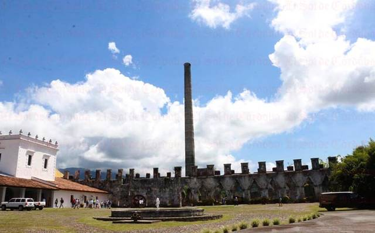

| Hora | Actividad | Lugar |
|---|---|---|
| 9:30 | Registro | Módulo de registro |
| 10:00 | Apertura del Evento | Ex Hacienda Toxpan |
| 12:00 | Ceremonia de Inaguración:
|
Salón de Usos Múltiples |
| 13:00 | Corte de listón y recorrido por área de exposición | Sala de Ensayos |
| 13:30 | Herramientas digitales aplicadas: Sistemas de información geográfica, At Farm,
YARA y Farm go.
|
Sala de Ensayos |
| 14:30 | Uso eficiente de los fertilizantes con el manejo de análisis de suelo, agua y la
fisiología de los cultivos
|
Sala de Ensayos |
Córdova
Veracruz
08 al 10 de Diciembre
3 días
Conferencias
Proveedores directos
Instituciones financieras
¿POR QUÉ DEBES ASISTIR?
Del 08 al 10 de Diciembre
La Secretaria de Agricultura y Desarrollo Rural (SADER) a travéz de su representación en el Estado de Veracruz, el Gobierno del Estado de Veracruz, la Secretaria de Desarrollo Agropecuario, Rural y Pesca (SEDARPA) y la Asociación Nacional de Productores y Comercializadores de Fertilizantes (ANACOFER) te invitan a la EXPO FERTILIZANTES.


CULTIVANDO EL ÁRBOL DE LA VIDA
CONFERENCISTAS

CULTIVANDO EL ÁRBOL DE LA VIDA
PROGRAMA 2021
| Hora | Actividad | Lugar |
|---|---|---|
| 10:00 | Panel: "Financiamiento para el sector agroalimentario"
|
Salón de Usos Múltiples |
| 11:00 | La importancia de los fertilizantes de eficiencia mejorada.
|
Salón de Usos Múltiples |
| 12:00 | Comportamiento del sector agropecuario en el Estado de Veracruz.
|
Salón de Usos Múltiples |
| 13:00 | Tecnología satelital aplicada al cultivo y fertilización de caña.
|
Salón de Usos Múltiples |
| 14:00 | Haifa Nutrinet: Sistema online para el manejo de la nutrición.
|
Salón de Usos Múltiples |
| Hora | Actividad | Lugar |
|---|---|---|
| 10:00 | Panel Intercambio de Experiencias: "Fertilizantes para el Bienestar" -por
definir-
|
Salón de Usos Múltiples |
| 11:00 | Panel: Uso eficiente y adecuado de Fertilizantes.
|
Salón de Usos Múltiples |
| 12:00 | La importancia de la regeneración de suelos para incrementar la rentabilidad
agrícola.
|
Salón de Usos Múltiples |
| 13:00 | Las Ventajas de la eficiencia en el Uso de Nitrógeno.
|
Salón de Usos Múltiples |
| 14:00 | Requisitos para la certificación de una biofábrica de insumos orgánicos.
|
Salón de Usos Múltiples |
¿DÓNDE SE LLEVARÁ A CABO?
SEDE
DETALLES DE LA SEDE
La Ex Hacienda Toxpan fue uno de los primeros ingenios azucareros del país, su importancia histórica para la ciudad es de gran relevancia, no sólo porque fue un ícono de la economía de la región y actualmente está siendo rescatada, pues el deterioro que sufrieron los vestigios al ser abandonada es grave, además de lo costoso, sin embargo, ya se realizan acciones para remozar el lugar y convertirlo en un centro cultural para los cordobeses.
Ex Hacienda, San Francisco de Toxpan nueva toxpan(Nuevo San Francisco), Nuevo San Francisco, 94510 Córdoba.

GALERÍA 2021
.jpeg)


.jpeg)
.jpeg)
.jpeg)

CONTACTO
Rafael Rodriguez
667 201 9805
anacofer@anacofer.com.mx
Mariana Hernandez
33 1116 2652
gerencia@anacofer.com.mx
Diana Lopez
663 388 4333
dianazevada10@gmail.com
Odalis Tapia
667 182 0354
anacofer@anacofer.com.mx